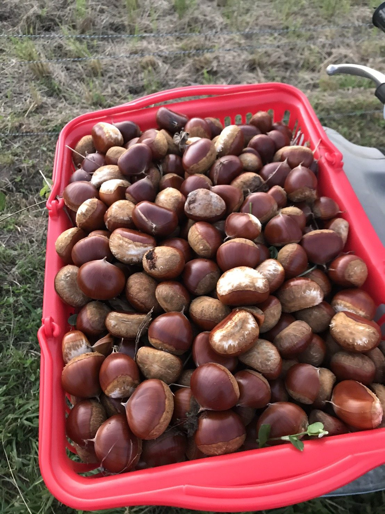
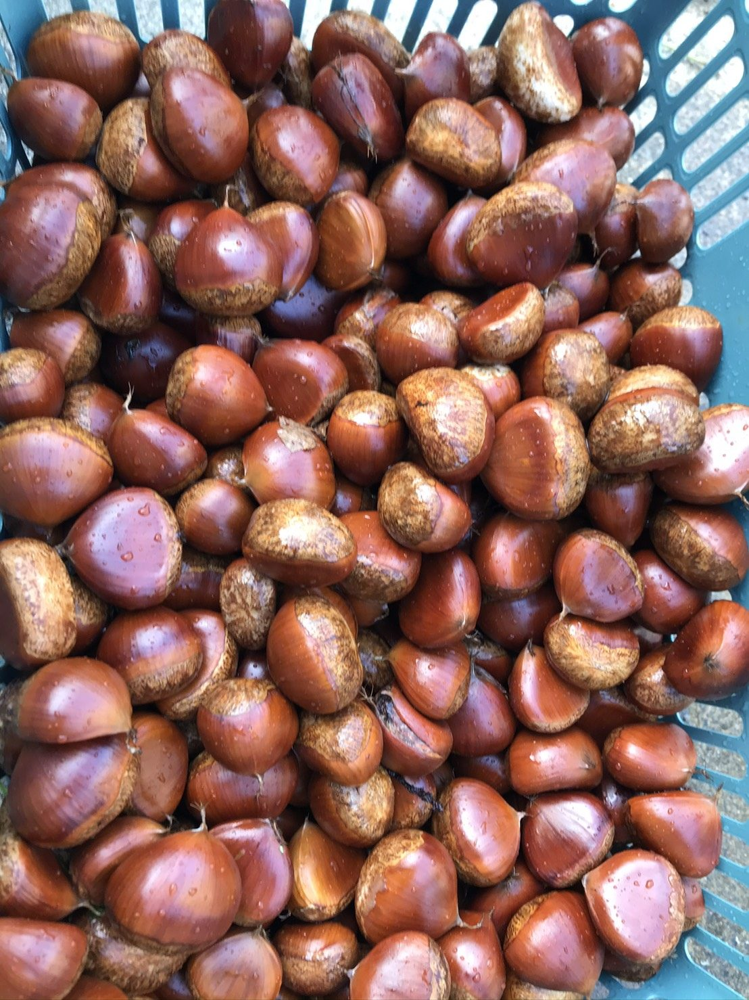
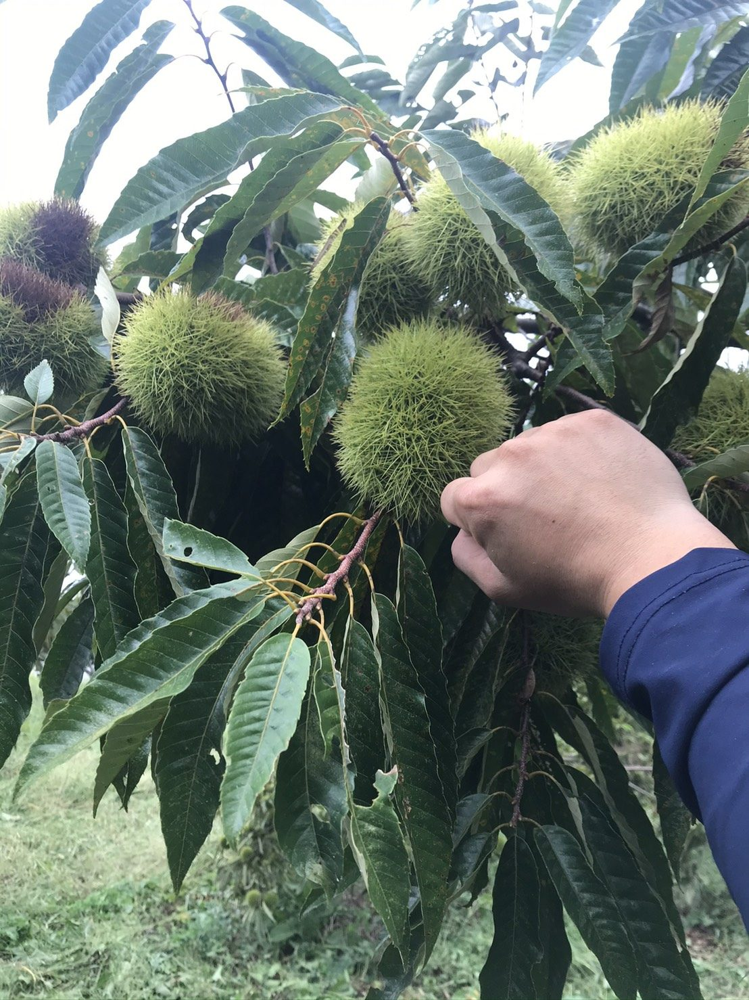
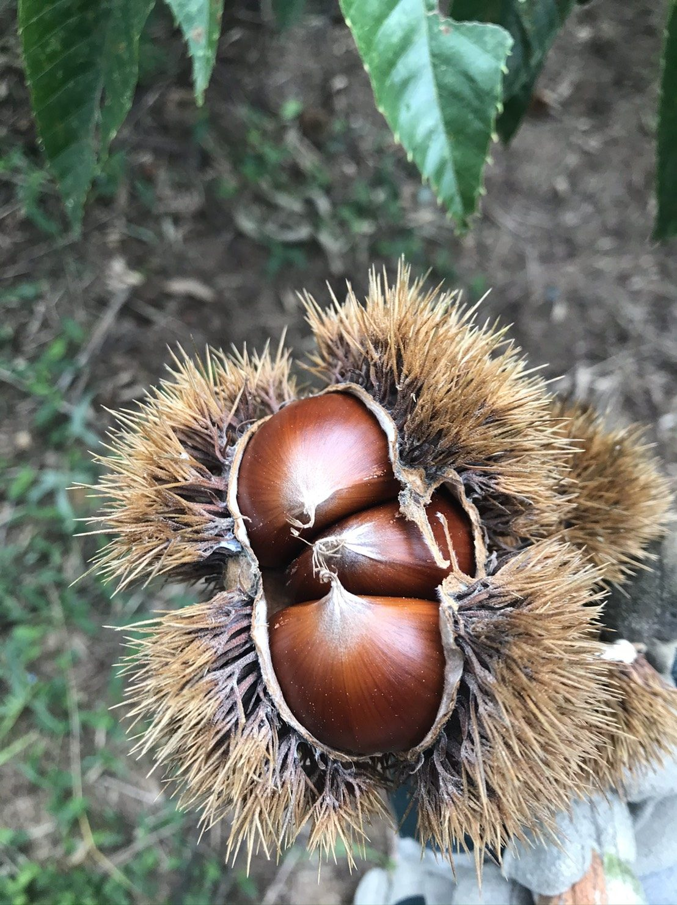
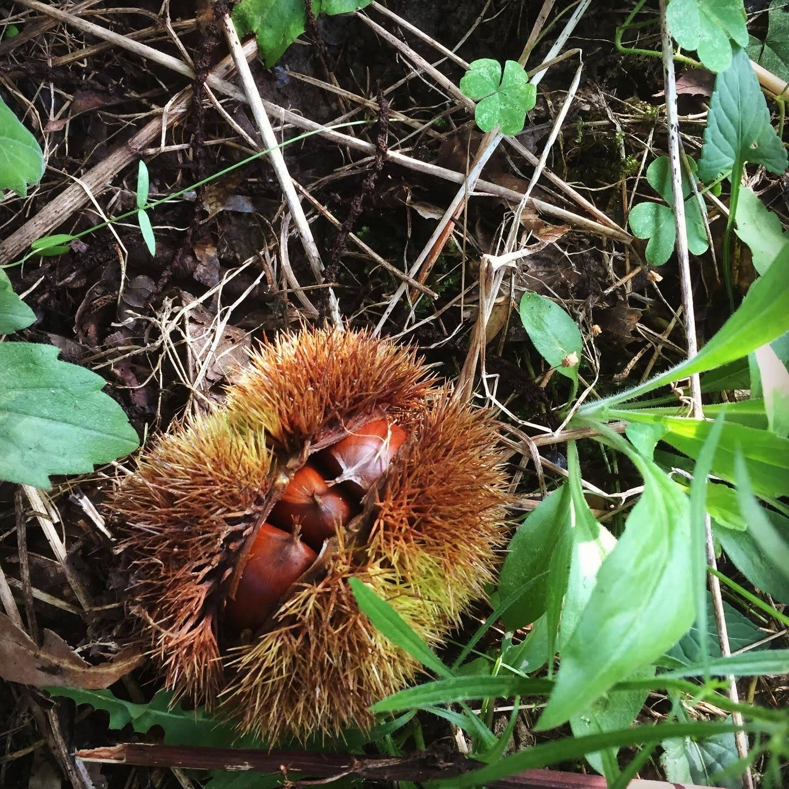
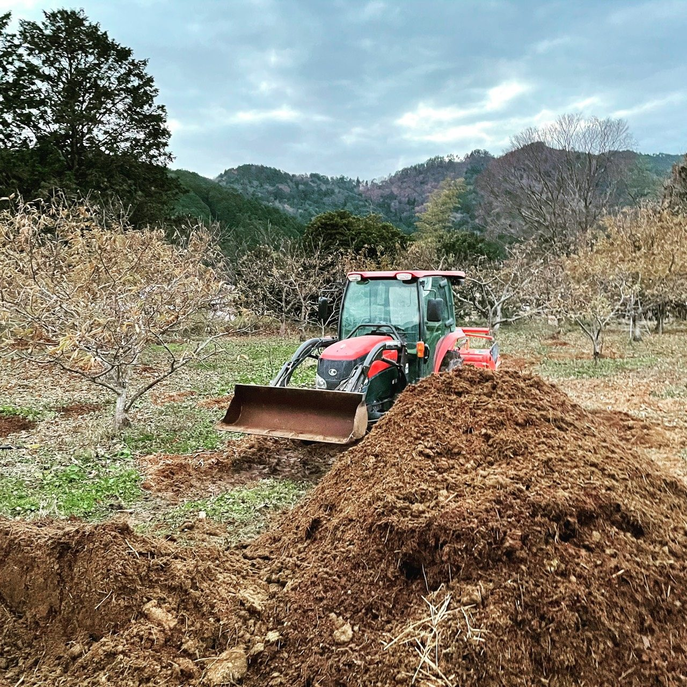
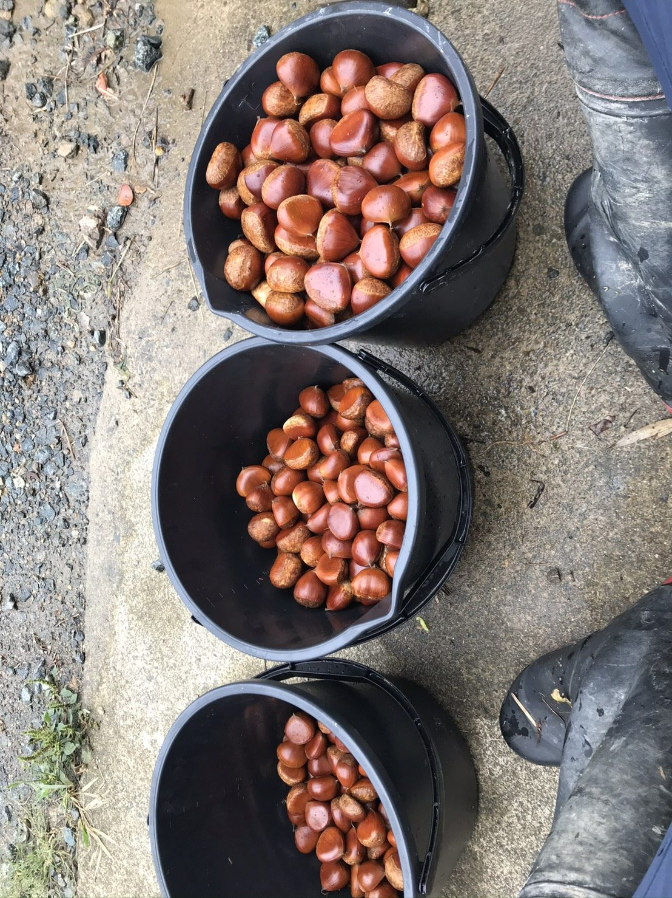
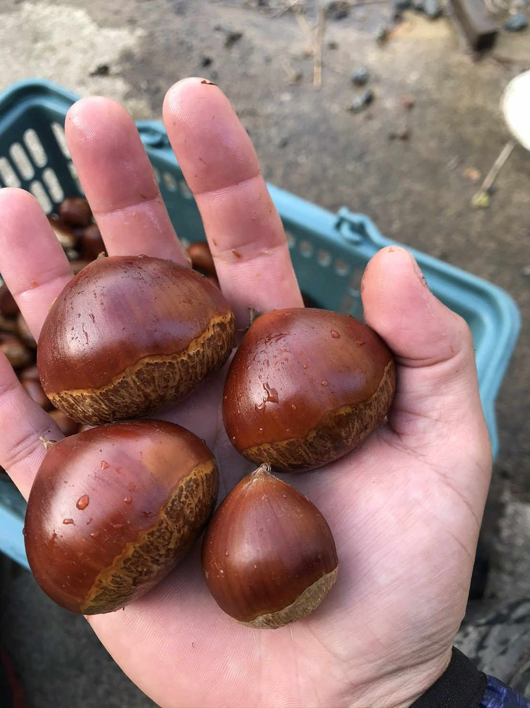
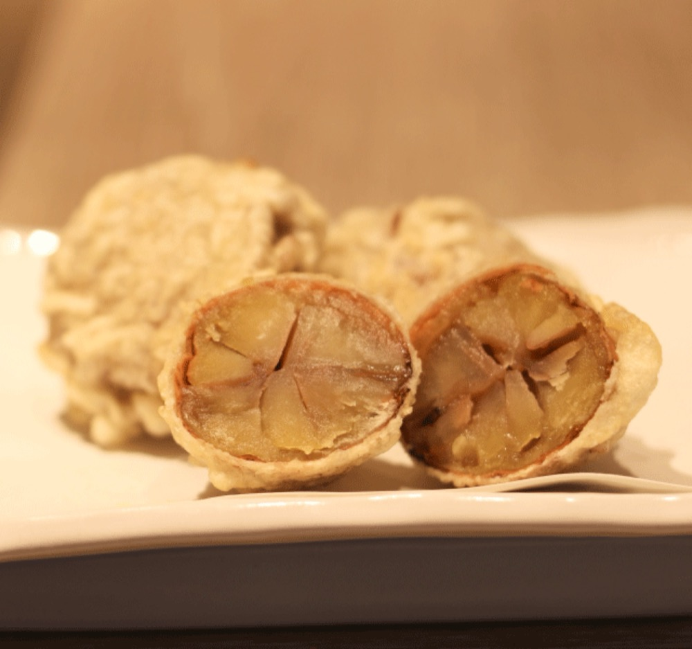
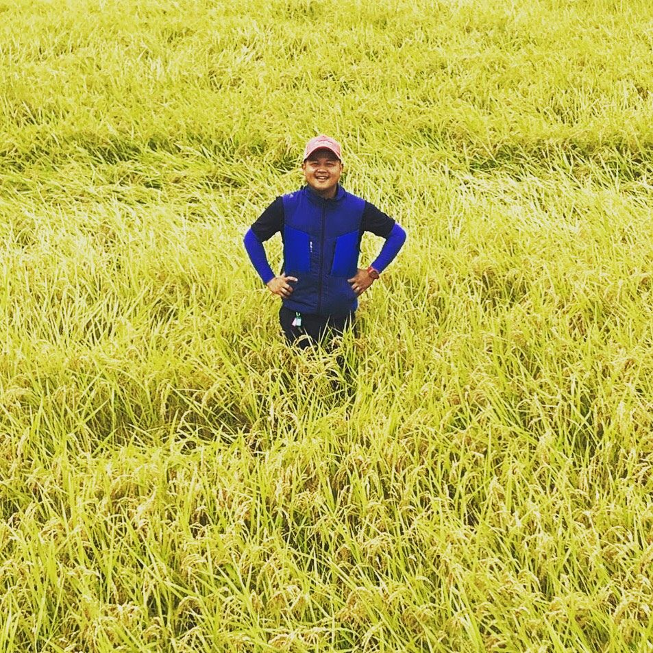

KURIHARA'S TAMBA CHESTNUT
1000年以上の歴史を持つ献上品を、丹波の栗園から。
株式会社丹農食品 代表取締役 栗原優介

私たちは2019年、「丹波の食材を全国へ、そして世界へ」というスローガンを掲げて会社をつくりました。いつか世界へ届けたいと本気で思い続けてきた丹波栗を持って、2026年2月、初めてフランス・パリを訪れました。
なにより心に残ったのは、私たちの循環型農業への反応です。牛のふんを堆肥にして土をつくり、栗や野菜、牧草、米を育て、その作物がまた牛を育てる。この仕組みに、フランスの方々は強い関心と深い敬意を寄せてくれました。言葉や国を越えても、本質は伝わる。そう実感した瞬間でした。
本物をつくる。それが、これからの私たちのテーマです。地域のために、日本のために、丹波栗で挑戦を続けます。
株式会社丹農食品 代表取締役 栗原 優介
「丹波といえば栗、栗といえば丹波」。
朝廷や幕府にも献上されてきた、栗の産地の名前です。

歴史丹波の栗は古くから名が知られ、千年以上にわたって高級品として扱われてきました。中国から伝わった接ぎ木の技術を生かし、より大きく、より甘い栗へと作り手が改良を重ねてきた歴史があります。

品種「丹波栗」はひとつの品種の名前ではなく、丹波で採れる大粒で味のよい栗の総称です。いまの代表的な品種は、丹波で生まれた「銀寄（ぎんよせ）」。実が大きく、甘み・風味・色つやのよさから、高級な和菓子や洋菓子に使われています。

気候丹波は山に囲まれた盆地で、年平均気温は東北地方と同じくらい。季節によっては昼と夜の気温差が20度を超えます。昼にためた養分が夜のうちに実に蓄えられ、甘みがのります。

私たちの栗づくりは、2019年に地元・丹波市市島町で栗畑を譲り受けたところから始まりました。翌2020年からは、大阪・東京の飲食店へ丹波栗をお届けしています。
いまは自社の栗園で育てた栗と、地域の農家さんから買い取る栗を合わせて、年に約2tを扱っています。
栗の木は年に一度、冬に剪定をします。栗は日当たりがとても大事な木なので、枝を整えて光が入るようにすることで、実が大きく、丹波栗らしく育ちます。土には、自分たちで育てている但馬牛の堆肥を入れています。
これまでは小さな規模で続けてきましたが、高齢の農家さんが栗づくりをやめられるのを機に、2026年から栗園を広げていきます。
牛・牧草・堆肥・米・栗をつなぐ循環型農業についてイガが割れて落ちた栗を、栗園で手で拾い集めます。

02粒の大きさ（L・2L・3Lなど）ごとに選り分け、用途に合わせてお届けします。

03収穫した栗は−1〜1℃に設定した冷蔵で保管し、加工やお届けまで鮮度を保ちます。
生の栗だけでなく、手間のかかる皮むきや下ごしらえも
丹波でおこない、使いやすい形でお届けします。
大きさごとに選別した丹波栗。
鬼皮も渋皮もむいた栗。料理や栗ご飯にそのまま使えます。
硬い鬼皮だけをむき、渋皮を残した栗。渋皮煮などの原料に。
渋皮を残したまま、じっくり煮含めた丹波栗。
ゆでて下ごしらえした栗。
製菓・料理に使いやすいペースト。
丹波栗を粉にする新しい加工品を、加工会社さんと一緒に試作しています。
※ 収穫量に限りがあるため、時期・数量によってはお受けできない場合があります。規格や量はご相談ください。

大阪・東京を中心に、フランス料理をはじめとするレストラン、和菓子店・洋菓子店、食品メーカーなど、栗の質にこだわるお客様に使っていただいています。
「この大きさで、この量を、この時期に」「皮むきまで済ませてほしい」など、使い方に合わせたご相談をお待ちしています。
地域で受け継がれてきた栗園を引き継ぎ、2026年から栽培の規模を広げていきます。
栗パウダーなど、丹波栗の新しい使い方を試作しています。
丹波栗を海外のお客様にもお届けできるよう、出荷の準備を進めています。

丹波市市島町出身。大学卒業後、商社で営業として働くうち、自信を持って売れるものを自分でつくりたいと就農を決意。日本一の米農家での修行を経て、従兄の大塩と2019年に丹波農商を設立しました。
丹波栗の事業は、丹波農商グループの食品会社「株式会社丹農食品」で、私たちが担っています。栗園の手入れから収穫・選別、むき栗や渋皮煮への加工、お客様へのお届けまで、一つひとつ自分の目で見ています。
生栗・むき栗・渋皮付き・ペーストなどのご相談は、お電話かフォームでお気軽にどうぞ。
ご希望の品目・量・時期をお知らせいただくとスムーズです。